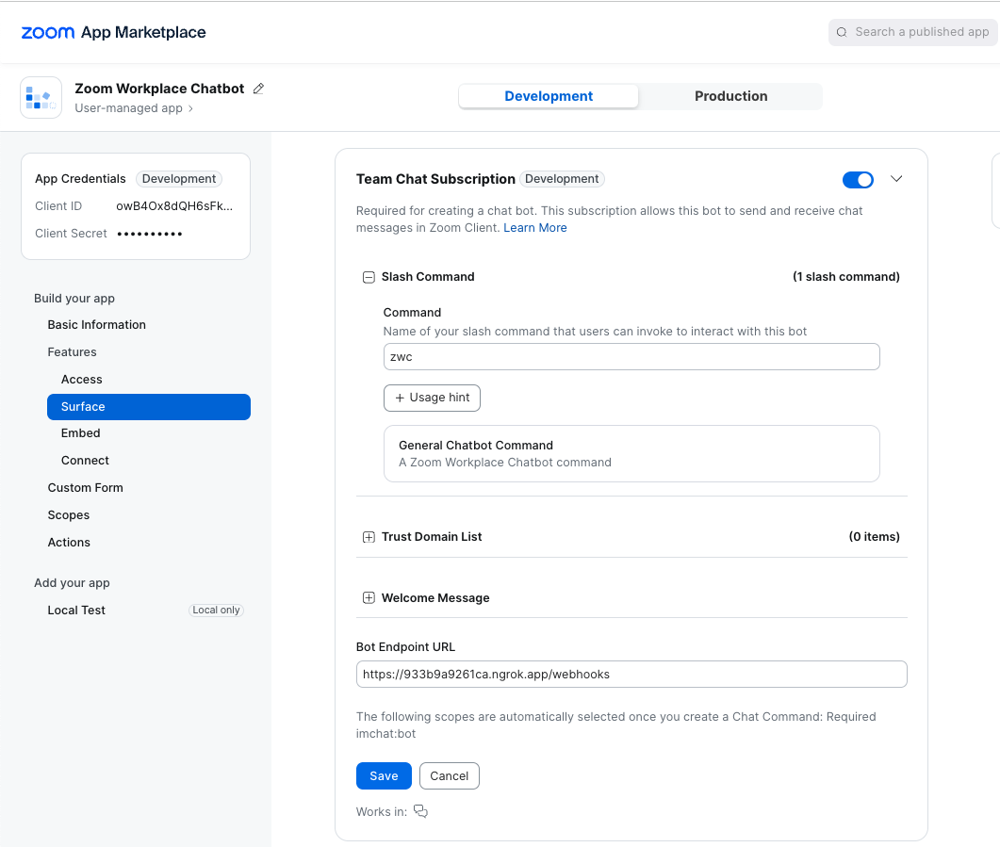
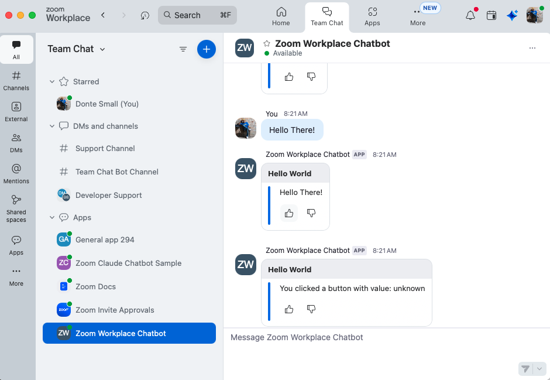
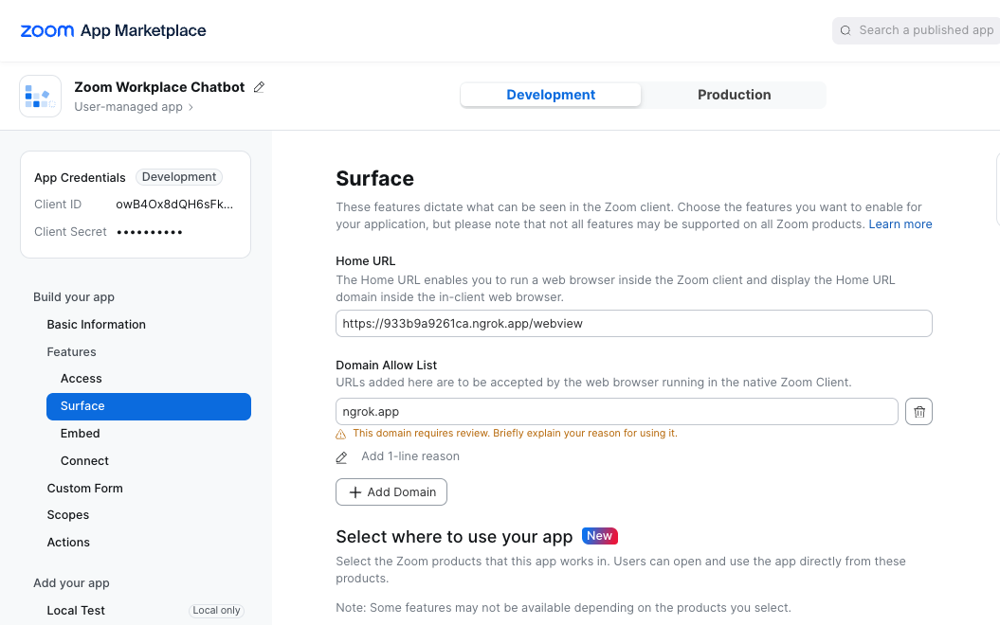
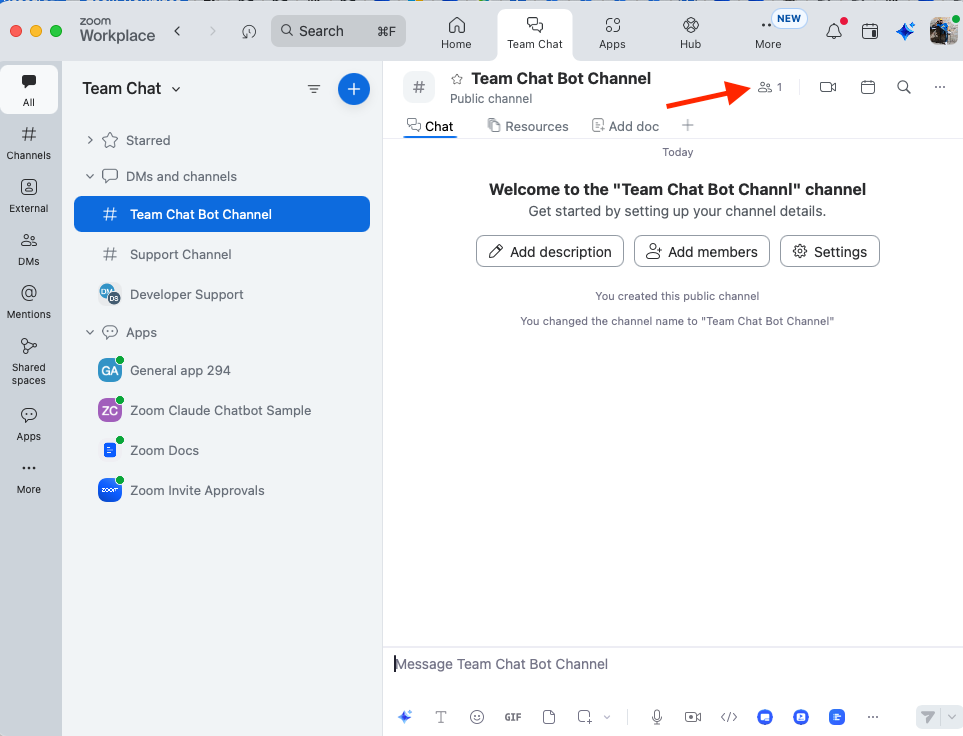
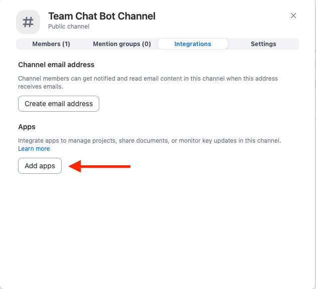
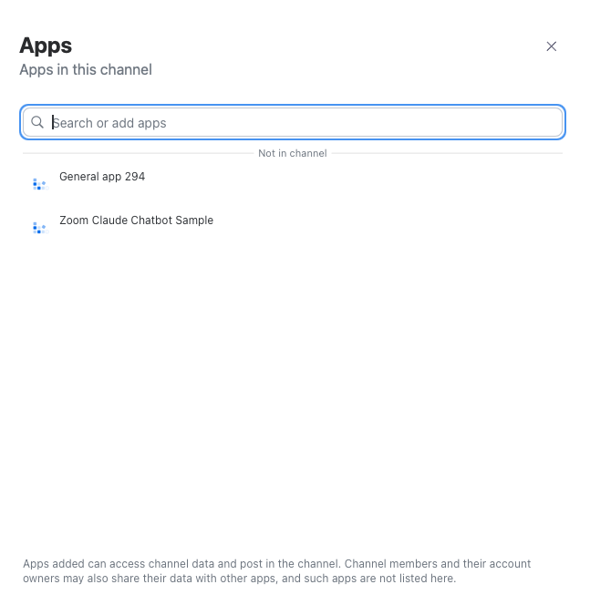
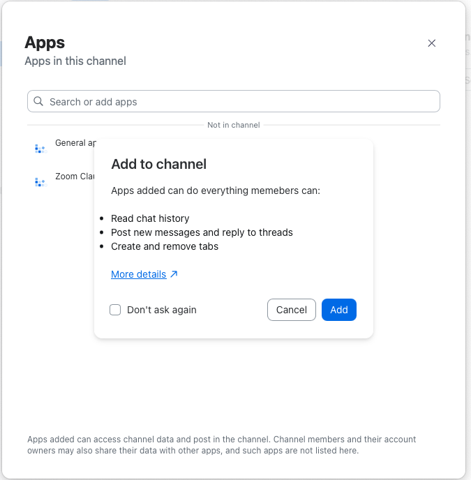

In this guide, you'll learn how to build Zoom Chatbot with node.js experss backend and Javascript.

The completed application offers userful features that demonstracte how to create applications for Zoom Team Chat.These features include the following:
Name | Description |
Setup, Auth, and Deep Linking | Set up your first Zoom Chatbot and implement OAuth 2.0 to handle chatbot installation and deep linking. |
Send, edit, and delete messages | Learn how to send messages using the Zoom Chatbot API. You'll create a Python script that authenticates and sends messages to a Zoom channel. |
Handling Events | Learn how to handle real-time events in Zoom Chatbot development. We'll subscribe to Zoom webhook events and use Flask to capture and respond to messages and user actions. |
Slash Commands | Learn how to create and handle custom slash commands in Zoom Workplace. You'll set up commands, process user input, and respond dynamically with chatbot messages. |
Markdown Messages & Emojis | Learn how to format and enhance your chatbot responses using markdown syntax, emojis, and message updates that react to user interactions. |
Reaction Handling | Learn how to capture and respond to reactions (emoji responses) to messages in Zoom Team Chat. You'll detect reactions through webhooks and handle them in your server logic. |
Replying to Messages (Using Threads) | Learn how to reply to specific Zoom Team Chat messages using threaded replies. This tutorial shows how to nest responses under a parent message using the |
Apps in Chat | Learn how to add a Chatbot to a Team Chat channel. This tutorial shows how to detect Chatbot events and responses. |
Prerequisites
- A Zoom Developer Account
- A General App created in the Zoom App Marketplace
- Node.js (v18+ recommended)
- ngrok (or another tunneling service)
- Your Zoom Chatbot credentials:
- Client ID
- Client Secret
- Bot JID
- Verification Token
What You'll Learn
By the end of this series, you'll have a working chatbot that can:
- Post and reply to messages within Zoom Team Chat
- Handle events from users and channels
- Respond to slash commands
- Send interactive messages, markdown, and emojis
- Search messages using the Zoom Team Chat API
- Schedule messages for future delivery
- Integrate with external APIs or databases
What you'll need
- Git
- Node
- Ngrok or a tunnel service provider of your choice
- Development envrinoment with a code editor and terminal
- Zoom Account with developer permissions
Resources
Zoom offers two powerful ways to extend Zoom Team Chat functionality: Team Chat APIs and Chatbot APIs. While both interact with Zoom Team Chat, they use different authentication methods and serve distinct use cases.
In this section, you'll implement authentication and authorization flows for both approaches.
To send messages using the Team Chat APIs, you'll implement OAuth 2.0. This allows you to request an account-level or user-level access token and call a wide range of API endpoints beyond Chatbot functionality. When the token expires, you can can use the refresh token to automatically refresh the access token.
To interact with Zoom Team Chat using a Chatbot, you'll use a Chatbot access token. This token is short-lived (one hour) and does not require a refresh token, making it ideal for lightweight, event-driven applications. When the token expires, you can request a new one without a refresh flow.
Chatbots are effective for keeping teams informed—whether by posting reminders, surfacing action items, or responding to slash commands.
Before you begin implementation, review the table below for a comparison of each method's use cases and capabilities:
🔍 Zoom Team Chat APIs vs. Zoom Chatbot APIs
Category | Zoom Team Chat APIs | Zoom Chatbot APIs |
API Type | REST API (part of Zoom's broader API platform) | Specialized API for building Zoom Team Chat bots |
Access Token Type | OAuth 2.0 access token (with refresh token) | Chatbot access token (no refresh token; short-lived) |
Token Expiry | Access token expires in 1 hour; refresh token used to renew | Expires in 1 hour; must request a new token manually |
Best For | Backend integrations, user-level or account-level operations | Real-time bot interactions in Zoom Team Chat |
Installation | OAuth flow required (user or admin consent) | Installed via Zoom Marketplace as a Chatbot |
Bot Mention Trigger | Not supported | Yes – Bots can listen and respond when @mentioned |
Can Post to Channel | Yes, using user token | Yes, using bot JID and Chatbot token |
Can Read Messages | Yes, with appropriate scopes | Only if the message is addressed to or from the bot |
----
🧩 Typical Use Cases: Zoom Team Chat API vs. Zoom Chatbot API
Use Case | Zoom Team Chat API | Zoom Chatbot API |
Send messages to a chat/channel | ✅ Yes (on behalf of user or system) | ✅ Yes (as the bot) |
Respond to @mentions in chat | ✅ Yes | ✅ Yes |
Handle slash commands | ❌ Not supported | ✅ Yes |
Post interactive message elements (buttons, menus) | ❌ Not supported | ✅ Yes |
Read chat messages | ✅ Yes (with scopes) | ✅ Only if sent to/from bot |
Manage channels (create, invite, remove users) | ✅ Yes | ❌ Not supported |
Receive event notifications (webhooks) | ✅ Via Zoom Event Subscriptions | ✅ Via Chatbot Event Triggers |
File sharing in chat | ✅ Yes | ✅ Yes |
System-level task notifications | ✅ Yes | ✅ Yes |
This guide provides the app's starter codebase. You can clone that repo and follow the steps to get started:
Starter Application
https://github.com/just-zoomit/zoomworkplace-chatbot -- starter-app
Create and configure Marketplace App
1. Create an OAuth app
👉 Click here to create an app on the Zoom App Marketplace
- Select General app and click Create.
[!NOTE] Take note of your app ID in the URL after app creation – you will need it to later on.
2. Retrieve app credentials
- Click Manage > your app
- Navigate to Basic Information > App Credentials
[!Note] Use these credentials for authorization.
3. Add required scopes
On the Scope page, select the following:
- Create apps: marketplace:write:app
- View an app: marketplace:read:app
4. Update the app using the Manifest API
Use the following endpoint to quickly configure a Zoom Marketplace app:
Example request:
PUT /marketplace/apps/{appId}/manifest
👉 Update an app by manifest API endpoint
5. Use Manifest JSON object to create Zoom App
Use an API tool like Postman to send a PUT request to the manifest endpoint with the JSON object below as the request body.
[!NOTE] Replace placeholder URLs like https://example.ngrok.io with your actual tunnel URL (e.g., from ngrok).
App Manifest JSON object - (Request body)
{
"manifest": {
"display_information": {
"display_name": "Zoom Claude Chatbot Sample"
},
"oauth_information": {
"usage": "USER_OPERATION",
"development_redirect_uri": "https://example.ngrok.app",
"production_redirect_uri": "",
"oauth_allow_list": [
"https://example.ngrok.app",
"https://oauth.pstmn.io/v1/callback"
],
"strict_mode": false,
"subdomain_strict_mode": false,
"scopes": [
{
"scope": "imchat:userapp",
"optional": false
},
{
"scope": "marketplace:read:app",
"optional": false
},
{
"scope": "marketplace:write:app",
"optional": false
}
]
},
"features": {
"products": [
"ZOOM_CHAT"
],
"development_home_uri": "",
"production_home_uri": "",
"in_client_feature": {
"zoom_app_api": {
"enable": false,
"zoom_app_apis": []
},
"guest_mode": {
"enable": false,
"enable_test_guest_mode": false
},
"in_client_oauth": {
"enable": false
},
"collaborate_mode": {
"enable": false,
"enable_screen_sharing": false,
"enable_play_together": false,
"enable_start_immediately": false,
"enable_join_immediately": false
}
},
"zoom_client_support": {
"mobile": {
"enable": false
},
"zoom_room": {
"enable": false,
"enable_personal_zoom_room": false,
"enable_shared_zoom_room": false,
"enable_digital_signage": false,
"enable_zoom_rooms_controller": false
},
"pwa_client": {
"enable": false
}
},
"embed": {
"meeting_sdk": {
"enable": false,
"enable_device": false,
"devices": []
},
"contact_center_sdk": {
"enable": false
},
"phone_sdk": {
"enable": false
}
},
"team_chat_subscription": {
"enable": true,
"enable_support_channel": false,
"slash_command": {
"command": "",
"command_hints": [],
"enable_add_to_channel": false,
"development_message_url": "https://example.ngrok.app/anthropic",
"production_message_url": "",
"sender_type": "zoom",
"welcome_msg": {
"title": "",
"body": ""
},
"trust_domain_list": []
},
"shortcuts": []
},
"event_subscription": {
"enable": false,
"events": []
}
}
}
}
Set up credentials
After configuring your Zoom Marketplace app, add the required values to your environment variables:
- Navigate to Basic Information to get your
Client IdandClient Secret. - Ensure the app is marked as User-managed under Basic Information.
- Go to Features → Access to find your
Secret Token. - Go to Surface → Team Chat Subscription to find your
Bot JID
Update the following variables in your .env file:
# Zoom app credentials
ZOOM_CLIENT_ID=your_zoom_client_id
ZOOM_CLIENT_SECRET=your_zoom_client_secret
ZOOM_CHANNEL_ID=your_zoom_channel_id
# Zoom account ID
ACCOUNT_ID=your_account_id
# MongoDB configuration
MONGO_URI=your_mongodb_connection_string
# Zoom bot JIDs (from Marketplace app settings)
ZOOM_ROBOT_JID=your_zoom_robot_jid
ZOOM_USER_JID=your_zoom_user_jid
# Server configuration (optional)
PORT=3000
:warning: Do not store credentials in plain text in production environments
In this section, you'll review a few areas of the app's starter codebase to which you'll add functionality in this codelab.
Folder and file structure
The following table contains an overview of the folder and file structure of the app:
Path | Description |
| Main entry point for the Express application. Loads environment variables, configures middleware (CORS, JSON), mounts all routes, and starts the HTTP server. |
| Handles incoming Zoom webhook events such as messages, reactions, and slash commands. Verifies the webhook signature or token before processing. |
| Demonstrates how to handle OAuth flows or token exchanges for installing and authorizing the Zoom Chatbot or app. |
| Provides endpoints that send or reply to Zoom Team Chat messages, exposing a simple REST API layer for the frontend or Postman. |
| Integrates with the Anthropic API (Claude). Manages non-streaming and streaming AI responses, conversation history, and message parsing. |
| Centralized input validation logic for incoming requests. Ensures required parameters (like |
| Handles Zoom Chatbot authentication and token generation. Caches and refreshes tokens securely using either Chatbot or Server-to-Server OAuth. |
| Contains helper functions for interacting with Zoom APIs—sending, editing, deleting, or searching Team Chat messages. Encapsulates retry and error handling. |
| Public landing page for the tutorial or demo application. Often includes a button to authenticate or deep-link into the Zoom client. |
| Secondary landing page reached after authentication or installation. Provides deep-link buttons or dashboards that connect back into the Zoom Chatbot. |
| Stores environment variables such as Zoom credentials, Anthropic keys, model names, and app configuration. Never commit this file to version control. |
| Declares Node.js dependencies, scripts, and metadata for the project. Used by npm or yarn to install and run the application. |
| Primary documentation for the tutorial. Explains setup, environment configuration, and the learning objectives of each section. |
To interact with the Zoom Team Chat API, all requests must be authorized using OAuth 2.0. Each API request must include a Bearer token in the Authorization header. Zoom supports industry-standard OAuth 2.0 (RFC 6749) flows for securely handling access and refresh tokens.
Unlike chatbots, where you request a new token for each interaction, Zoom Team Chat integrations require secure token storage and lifecycle management. Through the OAuth 2.0 flow, the authorization code provided in the redirect URL enables the use of the authorization_code grant type to access additional Zoom API endpoints.
Your app must be able to:
- Request, refresh, and revoke tokens based on the selected OAuth flow
- Securely store tokens
- Periodically renew or refresh tokens before expiration
In the next section, you'll extend a chatbot app built with Node.js and Express by implementing endpoints to authenticate users, manage OAuth tokens, and enable deep linking to the Zoom Team Chat chatbot in the Zoom desktop client.
Resources
In this section, you'll implement the installation and authorization flows to install a chatbot in a Zoom workspace, authenticate API requests, and deep link users between a browser-based application and the Zoom desktop client. This enables seamless transitions from SaaS web apps to native collaboration environments where work happens.
By the end of this section, you'll have:
- Secure Zoom Team Chat integration using OAuth 2.0
- Seamless deep linking between browser and Zoom client
- Reusable server endpoints for message delivery and future features
Implement OAuth 2.0 authentication
Add two routes to handle the OAuth 2.0 flow: one to initiate login, and another to process the callback from Zoom.
Endpoint | Description |
| Redirects users to Zoom's OAuth consent screen using the app's client ID and redirect URI. |
| Handles the redirect from Zoom, validates the |
File path:
routes/oauth-routes.js
import express from 'express';
import crypto from 'crypto';
import { buildBasicAuth, exchangeCodeForAccessToken } from '../utils/zoom-api.js';
const router = express.Router();
// Start OAuth flow
router.get('/login', (req, res) => {
try {
const state = crypto.randomBytes(16).toString('hex');
req.session.oauth_state = state;
const url = buildBasicAuth({
clientId: process.env.ZOOM_CLIENT_ID,
redirectUri: process.env.ZOOM_REDIRECT_URI,
state,
});
console.log('Redirecting to Zoom OAuth URL:', url);
return res.redirect(url);
} catch (e) {
console.error('OAuth login error:', e);
return res.status(500).send('OAuth not configured.');
}
});
// Handle Zoom OAuth callback
router.get('/callback', async (req, res) => {
try {
const { code, state, error, error_description } = req.query;
if (error) {
console.warn('Zoom authorization error:', error, error_description);
return res.status(400).send(`Authorization error: ${error}`);
}
if (!code || !state) return res.status(400).send('Missing code or state.');
if (state !== req.session.oauth_state) return res.status(400).send('Invalid state.');
delete req.session.oauth_state; // One-time use
const tokens = await exchangeCodeForAccessToken({
code,
redirectUri: process.env.ZOOM_REDIRECT_URI,
clientId: process.env.ZOOM_CLIENT_ID,
clientSecret: process.env.ZOOM_CLIENT_SECRET,
});
// For demonstration only: store tokens in session (use secure storage in production)
req.session.zoomTokens = tokens;
// Option A: Redirect to a confirmation page with a button to open in Zoom
return res.redirect('/dashboard');
// Option B: Redirect directly into Zoom using a JID deep link
// return res.redirect(`https://zoom.us/launch/chat?jid=${process.env.ROBOT_ZOOM_BOT_JID}`);
} catch (e) {
console.error('OAuth callback error:', e);
return res.status(500).send('Token exchange failed.');
}
});
export default router;
Add deep linking to the chatbot
After the user authorizes your app, use a deep link to open the chatbot directly in Zoom Team Chat. Add the following logic to a button on your confirmation page:
File path:
views/dashboard.html
<script>
const chatbotJid = "robot_v1nhrah1hrqhuexexb5nn5-a@xmpp.zoom.us"; // Replace with your bot JID
document.getElementById("zoom-button").addEventListener("click", () => {
const link = `https://zoom.us/launch/chat?jid=${encodeURIComponent(chatbotJid)}`;
window.open(link, "_blank", "noopener,noreferrer");
});
</script>
Use this pattern to create a smooth transition from your browser-based app to the Zoom client, improving user experience post-authorization.
In this section, you'll implement a utility function that sends messages from your chatbot to Zoom Team Chat using the Chatbot API. This function constructs a message body, retrieves a chatbot access token, and sends a POST request to Zoom's /im/chat/messages endpoint.
By the end of this section, you'll have:
- A reusable function to send messages to Zoom Team Chat
- Support for replying to messages using message threading
- Console logging for debugging message payloads and errors
Implement message sending logic
Create a utility function to send a chat message using the Chatbot API. The function accepts the recipient JID, message content, and an optional message ID for threaded replies.
File Path
utils/zoom-api.js
Code Snippet
/**
* Send a message to Zoom Team Chat
* @param {string} toJid - Recipient JID (user or channel)
* @param {string} message - Message content
* @param {string} [replyTo] - Optional message ID to reply to
* @returns {Promise<Object>} API response
*/
export async function sendChatMessage(toJid, message, replyTo = null) {
try {
const accessToken = await getChatbotToken();
const body = {
account_id: "YOUR_ACCOUNT_ID",
"content": {
"head": {
"text": "Hello World"
},
"body": [
{
"type": "message",
"text": message
}
]
},
robot_jid: "YOUR_ROBOT_JID",
to_jid: 'YOUR_JID',
user_jid: "YOUR_USER_JID",
};
console.log('Preparing to send message to Zoom Team Chat:', body);
if (replyTo) {
body.reply_to = replyTo;
}
const response = await fetch(`${ZOOM_API_BASE_URL}/im/chat/messages`, {
method: 'POST',
headers: {
Authorization: `Bearer ${accessToken}`,
'Content-Type': 'application/json',
},
body: JSON.stringify(body),
});
if (!response.ok) {
const error = await response.json();
throw new Error(`Failed to send message: ${error.message || response.statusText}`);
}
return response.json();
} catch (error) {
console.error('Error sending chat message:', error);
throw error;
}
}
This utility function enables structured messaging and optional threading in Zoom Team Chat—essential features for building interactive, event-driven chatbot experiences.
Create message route handler
Create a Post route to handler for messages.
File Path
routes/message-routes.js
Code Snippet
import express from 'express';
import fetch from 'node-fetch';
import { getChatbotToken } from '../utils/zoom-chatbot-auth.js';
import { validateMessagePayload, createValidationMiddleware, sanitizeMessage } from '../utils/validation.js';
const router = express.Router();
/**
* POST /api/message
* Sends a message to a Zoom Team Chat channel or user.
* Optional: include `reply_to` for threaded replies.
*/
router.post('/message', createValidationMiddleware(validateMessagePayload), async (req, res) => {
try {
const { to_jid, message, reply_to } = req.body;
// Sanitize message content
const sanitizedMessage = sanitizeMessage(message);
// Retrieve OAuth token from helper (Server-to-Server)
const accessToken = await getChatbotToken();
// Construct request body for Zoom API
const body = {
to_jid,
message: sanitizedMessage,
};
// Optional: add reply_to to nest the message in a thread
if (reply_to) body.reply_to = reply_to;
const response = await fetch('https://api.zoom.us/v2/im/chat/messages', {
method: 'POST',
headers: {
Authorization: `Bearer ${accessToken}`,
'Content-Type': 'application/json',
},
body: JSON.stringify(body),
});
const data = await response.json();
if (!response.ok) {
console.error('Zoom API error:', data);
return res.status(response.status).json({
success: false,
error: 'Zoom API error',
details: data
});
}
console.log('Message sent successfully:', data);
return res.status(200).json({
success: true,
message: 'Message sent successfully!',
data,
});
} catch (error) {
console.error('Error sending message:', error);
res.status(500).json({
success: false,
error: 'Internal server error',
message: process.env.NODE_ENV === 'production' ? 'Something went wrong' : error.message
});
}
});
export default router;
In this section, you'll implement a webhook handler to process real-time events sent from Zoom Team Chat to your chatbot. These events include bot installation, message notifications, and app deauthorization. You'll also handle Zoom's URL validation flow to verify your webhook endpoint.
By the end of this section, you'll have:
- A secure webhook handler for Zoom Team Chat events
- Support for responding to bot messages and system events
- Built-in validation and health check for endpoint reliability
Implement a webhook event handler
Set up a route to handle incoming Zoom Team Chatbot events, validate requests, and process supported event types.
Event type | Description |
| Triggered when a user sends a message to the chatbot |
| Sent when the chatbot is installed in a Zoom Team Chat workspace |
| Sent when the app is uninstalled |
| Used by Zoom to validate and verify the webhook endpoint |
File Path
routes/zoom-webhookHandler.js
Code Snippet
import express from 'express';
import { callAnthropicAPI } from '../utils/anthropic.js';
import { validateWebhookPayload, createValidationMiddleware } from '../utils/validation.js';
const router = express.Router();
/**
* Handles Zoom Team Chat webhook events
* @param {Object} req - Express request object
* @param {Object} res - Express response object
*/
async function handleZoomWebhook(req, res) {
try {
const { event, payload } = req.body;
console.log(`Received Zoom webhook event: ${event}`);
console.log('Payload:', payload);
const toJid = payload?.toJid;
const message = payload?.cmd || payload?.message || '';
switch (event) {
case 'bot_notification':
console.log('Processing bot notification from Zoom Team Chat');
sendChatMessage(toJid, message)
break;
case 'bot_installed':
console.log('Zoom Team Chat bot installed successfully');
break;
case 'app_deauthorized':
console.log('Zoom Team Chat bot uninstalled');
break;
case 'endpoint.url_validation':
console.log('Validating webhook endpoint URL');
return res.status(200).json({
message: {
plainToken: payload?.plainToken || 'missing_token',
},
});
default:
console.log(`Unsupported Zoom webhook event type: ${event}`);
break;
}
res.status(200).json({
success: true,
message: 'Event processed successfully',
event
});
} catch (error) {
console.error('Error handling Zoom webhook event:', error);
res.status(500).json({
success: false,
error: 'Internal Server Error',
message: error.message
});
}
}
// Webhook route with validation
router.post('/', createValidationMiddleware(validateWebhookPayload), handleZoomWebhook);
// Health check endpoint
router.get('/health', (_req, res) => {
res.status(200).json({
status: 'healthy',
timestamp: new Date().toISOString(),
service: 'zoom-webhook-handler'
});
});
export default router;
This webhook handler enables real-time communication between your Zoom chatbot and users, allowing your app to respond to messages, handle installations, and maintain a reliable connection with Zoom Team Chat.
In this section, you'll configure a slash command in the Zoom App Marketplace and use the App Card Builder Kit to design interactive UI elements. These enhancements allow users to trigger your chatbot using a command and receive structured messages with buttons for feedback or interaction.
By the end of this section, you'll have:
- A slash command configured to invoke your chatbot in Zoom Team Chat
- An interactive message layout created using the App Card Builder Kit
- An updated
sendChatMessagefunction that sends a UI-rich response
Configure a slash command
Set up a slash command to allow users to trigger the chatbot from Zoom Team Chat.
- Navigate to the Zoom App Marketplace
- Select your app
- In the sidebar, go to Surface > Team Chat Subscription
- Toggle Slash Command and enter
zwc(or a command of your choice)
Example:

Create UI elements with Card Builder
Use the Zoom App Card Builder Kit to design structured messages and interactive components like buttons.
- Open the App Card Builder Kit
- In the Actions panel, select Feedback Buttons
- Customize the card layout and preview the message
- Copy the generated JSON and update your chatbot message payload
Example:

Update chatbot message payload
To include UI elements like feedback buttons in your chatbot response, update the body object in your sendChatMessage function.
File path:
utils/zoom-api.js
const body = {
account_id: "YOUR_ACCOUNT_ID",
robot_jid: "YOUR_ROBOT_JID",
to_jid: "YOUR_JID",
user_jid: "YOUR_USER_ID",
content: {
head: {
text: "Hello World",
style: { bold: true }
},
body: [
{
type: "message",
text: message
},
{
type: "actions",
items: [
{
text: "Thumbsup",
value: "thumbsup",
style: "Thumbsup"
},
{
text: "Thumbsdown",
value: "thumbsdown",
style: "Thumbsdown"
}
]
}
]
}
};
This pattern combines slash commands and interactive cards to create a more engaging Zoom Team Chat experience—making your chatbot feel intuitive, responsive, and visually aligned with modern collaboration workflows.
In this section, you'll add logic to handle button clicks from interactive messages sent by your Zoom Team Chatbot. When a user clicks a button—such as a thumbs-up or thumbs-down—your bot will capture the value and respond accordingly in chat.
By the end of this section, you'll have:
- Support for handling interactive message button clicks
- Dynamic chatbot responses based on user input
- A visual confirmation of the button value in Zoom Team Chat
Add a handler for interactive message actions
Extend your webhook event handler to respond to the interactive_message_actions event. This allows your bot to capture the value of a clicked button and send a follow-up message to the chat.
File path: routes/zoom-webhookHandler.js
case 'interactive_message_actions':
console.log('Processing interactive message action from Zoom Team Chat');
sendChatMessage(toJid, `You clicked a button with value: ${payload?.actionItem?.value || 'unknown'}`);
break;
Test your chatbot's reaction handling
- Launch your chatbot in Zoom Team Chat
- Click the thumbs-up or thumbs-down button
- The chatbot should reply with the value of the button you clicked
Example:

This interaction pattern gives users immediate feedback and enables lightweight input collection inside Zoom Team Chat—ideal for surveys, approvals, or quick actions.
In this section, you'll integrate the Anthropic API with your Zoom Team Chatbot to handle user messages in threads. When a user sends a message to the bot, your app will generate a reply using an AI model (such as Claude 3.5) and respond in the same thread.
By the end of this section, you'll have:
- A working integration with the Anthropic API
- Threaded AI responses in Zoom Team Chat
- Session-based message history for improved conversational context
Add Anthropic integration
Create a utility function that sends a user's message to Anthropic, receives a completion, and replies to the chat thread. It maintains per-user history to support contextual conversations.
utils/anthropic.js
Code Snippet
// anthropic.js
import dotenv from 'dotenv';
import { sendChatMessage } from './zoom-api.js';
dotenv.config();
let conversationHistory = new Map();
const ANTHROPIC_URL = 'https://api.anthropic.com/v1/messages';
// ⚠️ Use a model your key actually has access to. Consider resolving via /v1/models at boot.
const DEFAULT_MODEL = process.env.ANTHROPIC_MODEL || 'claude-3-5-sonnet-latest';
function buildHeaders() {
const apiKey = process.env.ANTHROPIC_API_KEY;
if (!apiKey) throw new Error('Missing ANTHROPIC_API_KEY in environment variables.');
if (!apiKey.startsWith('sk-ant-')) throw new Error('Invalid ANTHROPIC_API_KEY format. Should start with "sk-ant-".');
return {
'x-api-key': apiKey,
'anthropic-version': '2023-06-01',
'Content-Type': 'application/json',
};
}
function buildRequestBody({ model, messages, stream }) {
return {
model,
max_tokens: 1000,
temperature: 0.7,
system:
'You are a helpful AI assistant integrated with Zoom Team Chat. Provide concise, helpful responses to user questions and requests.',
messages,
stream,
};
}
/**
* Main entry point.
* @param {Object} payload - Zoom webhook payload containing toJid / message
* @param {Object} options - { stream?: boolean, onStreamChunk?: (chunk, soFar) => void }
*/
export async function callAnthropicAPI(payload, options = {}) {
const userJid = payload?.toJid;
if (!userJid) {
console.error('Error: payload.toJid is missing.');
return;
}
const { stream = true, onStreamChunk = null } = options;
try {
const headers = buildHeaders();
// Build conversation
const history = conversationHistory.get(userJid) || [];
const userMessage = { role: 'user', content: payload.cmd || payload.message || 'Hello' };
history.push(userMessage);
const requestData = buildRequestBody({
model: DEFAULT_MODEL,
messages: history,
stream,
});
console.log(`Sending message to Anthropic (model=${DEFAULT_MODEL}, stream=${stream}) for user: ${userJid}`);
const completion = stream
? await handleStreamingResponse(requestData, headers, userJid, payload, onStreamChunk)
: await handleNonStreamingResponse(requestData, headers, userJid, payload);
return completion;
} catch (error) {
console.error('Error in callAnthropicAPI:', error?.message || error);
try {
await sendChatMessage(
payload?.toJid,
'Sorry, I hit an AI model error. I will be back shortly. (Check model access/config.)',
payload?.reply_to || null
);
} catch (sendError) {
console.error('Failed to send error message to user:', sendError?.message || sendError);
}
// Normalize Anthropic error logging
const status = error?.status ?? error?.response?.status;
const data = error?.response?.data ?? error?.message;
if (status) {
console.error('Anthropic API Error:', { status, data });
if (status === 401) console.error('Authentication failed. Check ANTHROPIC_API_KEY.');
if (status === 429) console.error('Rate limit exceeded.');
if (status === 400) console.error('Bad request (params/schema).');
if (status === 404) console.error('Model not found for your account/region.');
} else if (error?.request) {
console.error('No response from Anthropic API:', error.message);
}
}
}
/**
* Non-streaming path using native fetch.
*/
async function handleNonStreamingResponse(requestData, headers, userJid, payload) {
const response = await fetch(ANTHROPIC_URL, {
method: 'POST',
headers,
body: JSON.stringify({ ...requestData, stream: false }),
});
if (!response.ok) {
// try to read JSON, fall back to text
let errorData = {};
try {
errorData = await response.json();
} catch {
errorData = { message: await response.text() };
}
const error = new Error(`HTTP ${response.status}: ${response.statusText}`);
error.status = response.status;
error.response = { data: errorData };
throw error;
}
const data = await response.json();
if (!data?.content || !Array.isArray(data.content)) {
throw new Error(`Unexpected response from Anthropic API: ${JSON.stringify(data)}`);
}
const completion = data.content
.filter((b) => b.type === 'text')
.map((b) => b.text)
.join('\n')
.trim();
if (!completion) throw new Error('Empty response from Anthropic API');
// Append assistant message & trim history
const history = conversationHistory.get(userJid) || [];
history.push({ role: 'assistant', content: completion });
conversationHistory.set(userJid, history.length > 20 ? history.slice(-20) : history);
await sendChatMessage(userJid, completion, payload.reply_to || null);
console.log('Successfully sent response to Zoom Team Chat');
return completion;
}
/**
* Streaming path using native fetch + Web Streams.
* Parses Server-Sent Events (SSE): frames separated by blank line, with "event:" and "data:" lines.
*/
async function handleStreamingResponse(requestData, headers, userJid, payload, onStreamChunk) {
// IMPORTANT for SSE:
const sseHeaders = {
...headers,
Accept: 'text/event-stream',
};
const response = await fetch(ANTHROPIC_URL, {
method: 'POST',
headers: sseHeaders,
body: JSON.stringify({ ...requestData, stream: true }),
});
if (!response.ok) {
let errorData = {};
try {
errorData = await response.json();
} catch {
errorData = { message: await response.text() };
}
const error = new Error(`HTTP ${response.status}: ${response.statusText}`);
error.status = response.status;
error.response = { data: errorData };
throw error;
}
const reader = response.body.getReader();
const decoder = new TextDecoder();
let buf = '';
let completion = '';
try {
for (;;) {
const { done, value } = await reader.read();
if (done) break;
buf += decoder.decode(value, { stream: true });
// SSE frames are separated by a blank line (\n\n)
let sep;
while ((sep = buf.indexOf('\n\n')) !== -1) {
const frame = buf.slice(0, sep);
buf = buf.slice(sep + 2);
let eventType = '';
let dataLine = '';
for (const line of frame.split('\n')) {
if (line.startsWith('event:')) eventType = line.slice(6).trim();
else if (line.startsWith('data:')) dataLine += line.slice(5).trim();
}
if (!dataLine) continue;
if (dataLine === '[DONE]') {
// Some providers use this sentinel; Anthropic also sends message_stop events
continue;
}
try {
const parsed = JSON.parse(dataLine);
// Anthropic streaming lifecycle:
// - content_block_start
// - content_block_delta (delta.type === 'text_delta', delta.text)
// - content_block_stop
// - message_stop
if (parsed.type === 'content_block_delta' && parsed.delta?.type === 'text_delta') {
const chunk = parsed.delta.text || '';
if (chunk) {
completion += chunk;
onStreamChunk?.(chunk, completion);
}
}
if (parsed.type === 'message_stop' || eventType === 'message_stop') {
// End of message
// Clear buf in case anything remains
buf = '';
}
} catch {
// Ignore malformed pieces
}
}
}
} finally {
try {
reader.releaseLock();
} catch {}
}
if (!completion.trim()) {
throw new Error('Empty response from Anthropic streaming API');
}
// Append assistant message & trim history
const history = conversationHistory.get(userJid) || [];
history.push({ role: 'assistant', content: completion });
conversationHistory.set(userJid, history.length > 20 ? history.slice(-20) : history);
// Send the full completion to Zoom (the streaming UI can also show partials via onStreamChunk)
await sendChatMessage(userJid, completion, payload.reply_to || null);
console.log('Successfully sent streaming response to Zoom Team Chat');
return completion;
}
export async function callAnthropicAPIStreaming(payload, onStreamChunk) {
return callAnthropicAPI(payload, {
stream: true,
onStreamChunk,
});
}
export function clearConversationHistory(userJid) {
conversationHistory.delete(userJid);
console.log(`Cleared conversation history for user: ${userJid}`);
}
export function getConversationHistory(userJid) {
return conversationHistory.get(userJid) || [];
}
Update webhook to trigger Anthropic replies
Modify the bot_notification case in your webhook handler to call the Anthropic API when a user sends a message to the chatbot.
routes/zoom-webhookHandler.js
Code Snippet
import { callAnthropicAPI } from '../utils/anthropic.js';
...
case 'bot_notification':
console.log('Processing bot notification from Zoom Team Chat');
await callAnthropicAPI(payload, true);
break;
This implementation allows your Zoom Team Chatbot to respond in threads using AI-generated answers, creating a conversational experience powered by Anthropic's large language models.
In this section, you'll configure an app shortcut in the Zoom App Marketplace and enable a secure webview experience inside Zoom Team Chat. Shortcuts allow users to trigger actions like launching modals or composing messages, while the webview surface enables in-app UI hosted from your server.
By the end of this section, you'll have:
- A Zoom Team Chat shortcut with a custom command and modal launch
- Secure headers added to enable embedded webviews
- A working webview rendered inside the Zoom client
Configure an app shortcut
Create a new app shortcut that lets users trigger a modal or message action directly from Zoom Team Chat.
- Go to the Zoom App Marketplace
- Select your app
- Navigate to Surface > App Shortcuts
- Toggle New Action to enabled
- Fill in the fields:
- Action Name:
Create note - Action Command ID:
create_note
- Action Name:
- Choose both action types:
- Compose Box
- Message Action
- (Optional) Set:
- Action Dialog Title:
Create a note - Action Dialog Size: Medium
- Upload an icon if desired
- Action Dialog Title:
Example UI:


Enable secure webview
To render a custom web experience inside the Zoom client, configure the Surface > Home URL and allowed domains.
- In the Surface tab, scroll to Home URL
- Enter the webview URL served by your backend (e.g.
https://example.ngrok.app/webview) - Under Domain Allow List, add the root domain (
ngrok.app) - Provide a one-line justification (e.g. "Development testing using ngrok")
Example UI:

Add security headers to support webview
Install Helmet to enforce content security policies that allow Zoom to embed your app in the Zoom client.
Install Helmet
npm install helmet
File path: server.js
import helmet from 'helmet';
app.use(helmet({
contentSecurityPolicy: {
useDefaults: true,
directives: {
defaultSrc: ["'self'"],
scriptSrc: [
"'self'",
"'unsafe-inline'",
"https://appssdk.zoom.us",
"https://source.zoom.us",
"https://cdn.ngrok.com"
],
styleSrc: ["'self'", "'unsafe-inline'", "https://cdn.ngrok.com"],
fontSrc: ["'self'", "data:", "https://cdn.ngrok.com"],
imgSrc: ["'self'", "data:", "blob:"],
connectSrc: [
"'self'", "wss:",
"https://zoom.us", "https://*.zoom.us",
"https://*.ngrok.app", "https://*.ngrok.io"
],
frameAncestors: ["'self'", "https://*.zoom.us"], // Required for Zoom
},
},
}));
Add a sample webview page
Create a basic HTML file to test rendering your app within the Zoom client.
File path: views/webview.html
<p>Some text</p>
<button>Some actions</button>
This configuration allows your app to securely launch modal dialogs and render embedded content directly inside the Zoom client—key capabilities for building rich, native-feeling chat extensions.
In this section, you'll configure the Zoom App to surface a custom webview inside Zoom Team Chat using the Zoom Apps SDK. This modal can be launched using app shortcuts and enables direct interaction with users inside the Zoom client—such as composing messages or viewing context.
By the end of this section, you'll have:
- A custom webview that runs inside the Zoom Team Chat modal
- SDK integration to send messages or display chat context
- Secure headers and domain permissions to integrate a third-party app into the Zoom client
Configure domain allow list
To enable Zoom to render your app in the Zoom client, you must allowlist the domains used for your webview.
- Go to the Surface tab in your Zoom App configuration
- Set the Home URL to the path hosting your webview (e.g.
https://example.ngrok.app/webview) - Under Domain Allow List, add:
ngrok.app— required for local developmentappssdk.zoom.us— required to load the Zoom Apps SDK
Provide a reason for each custom domain if prompted.
Example UI:

Implement Zoom Apps SDK in webview
Build an HTML view that initializes the Zoom SDK, allows users to compose a message, and optionally view context data from the current chat. This is the modal UI users will interact with inside Zoom.
File path:
views/webview.html
Code Snippet
<!DOCTYPE html>
<html>
<head>
<meta charset="utf-8" />
<title>Zoom Workplace Chatbot Demo</title>
<!-- ✅ Public script (global zoomSdk) -->
<script src="https://appssdk.zoom.us/sdk.min.js" defer></script>
<style>
body {
font-family: system-ui, -apple-system, Segoe UI, Roboto, sans-serif;
margin: 24px;
max-width: 600px;
background: #f8f9fa;
}
h1 {
margin-bottom: 20px;
color: #333;
text-align: center;
}
.demo-container {
background: white;
padding: 24px;
border-radius: 12px;
box-shadow: 0 2px 10px rgba(0, 0, 0, 0.1);
margin-bottom: 20px;
}
.form-group {
margin-bottom: 20px;
}
label {
display: block;
margin-bottom: 8px;
font-weight: 600;
color: #555;
}
textarea {
width: 100%;
min-height: 120px;
padding: 12px;
border: 2px solid #e1e5e9;
border-radius: 8px;
font-family: inherit;
font-size: 14px;
resize: vertical;
box-sizing: border-box;
}
textarea:focus {
outline: none;
border-color: #0e72ed;
}
.button-group {
display: flex;
gap: 12px;
margin-top: 20px;
}
button {
padding: 12px 24px;
border: none;
border-radius: 8px;
font-weight: 600;
cursor: pointer;
font-size: 14px;
transition: background-color 0.2s;
}
.btn-primary {
background: #0e72ed;
color: white;
flex: 1;
}
.btn-primary:hover {
background: #0c5fbb;
}
.btn-secondary {
background: #6c757d;
color: white;
flex: 1;
}
.btn-secondary:hover {
background: #545b62;
}
.status {
padding: 12px;
border-radius: 8px;
margin-top: 16px;
text-align: center;
font-weight: 500;
}
.success {
background: #d4edda;
color: #155724;
border: 1px solid #c3e6cb;
}
.error {
background: #f8d7da;
color: #721c24;
border: 1px solid #f1b0b7;
}
.info {
background: #cce7ff;
color: #004085;
border: 1px solid #99d3ff;
}
.hint {
color: #666;
font-size: 13px;
margin-top: 8px;
font-style: italic;
}
.context-section {
background: #f8f9fa;
padding: 16px;
border-radius: 8px;
margin-top: 20px;
border: 1px solid #e1e5e9;
}
.context-title {
font-weight: 600;
color: #333;
margin-bottom: 12px;
font-size: 16px;
}
.context-item {
background: white;
padding: 12px;
border-radius: 6px;
margin-bottom: 10px;
border-left: 4px solid #0e72ed;
}
.context-item h4 {
margin: 0 0 8px 0;
color: #0e72ed;
font-size: 14px;
}
.context-content {
font-family: "Courier New", monospace;
font-size: 12px;
color: #666;
background: #f8f9fa;
padding: 8px;
border-radius: 4px;
white-space: pre-wrap;
word-break: break-word;
}
.not-in-zoom {
text-align: center;
padding: 40px 24px;
color: #721c24;
background: #f8d7da;
border: 1px solid #f1b0b7;
border-radius: 12px;
margin: 20px 0;
}
.not-in-zoom h2 {
color: #721c24;
margin-bottom: 16px;
}
</style>
</head>
<body>
<div id="not-in-zoom-message" class="not-in-zoom" style="display: none">
<h2>⚠️ Zoom Client Required</h2>
<p>
This page is designed to run inside the Zoom desktop or mobile client.
</p>
<p>
Please open this URL from within a Zoom chat or meeting to access the
full functionality.
</p>
</div>
<div id="main-content">
<h1>🚀 Zoom Workplace Chatbot Demo</h1>
<div class="demo-container">
<div class="form-group">
<label for="messageInput">Custom Message</label>
<textarea
id="messageInput"
placeholder="Type your message here to send to the chat..."
></textarea>
<div class="hint">
Enter any text you want to send as a message to the current chat
</div>
</div>
<div class="button-group">
<button id="sendCustomBtn" class="btn-primary">
Send Custom Message
</button>
<button id="sendContextBtn" class="btn-secondary">
Send Chat Context
</button>
</div>
<div class="hint" style="text-align: center; margin-top: 16px">
This demo shows how Zoom Apps can interact with chat conversations
</div>
</div>
<div class="context-section">
<div class="context-title">📊 Context Information</div>
<div class="context-item">
<h4>Running Context</h4>
<div id="runningContext" class="context-content">Not available</div>
</div>
<div class="context-item">
<h4>Chat Context</h4>
<div id="chatContext" class="context-content">Not available</div>
</div>
</div>
<div id="status"></div>
</div>
<script>
/* globals zoomSdk */
let isInitialized = false;
let chatContext = null;
let runningContext = null;
// Helper to show status messages
function showStatus(message, type = "info") {
const statusDiv = document.getElementById("status");
statusDiv.innerHTML = `<div class="status ${type}">${message}</div>`;
setTimeout(() => (statusDiv.innerHTML = ""), 3000);
}
// Helper to update context displays
function updateContextDisplays() {
const runningContextEl = document.getElementById("runningContext");
const chatContextEl = document.getElementById("chatContext");
if (runningContext) {
runningContextEl.textContent = JSON.stringify(
runningContext,
null,
2
);
}
if (chatContext) {
chatContextEl.textContent = JSON.stringify(chatContext, null, 2);
}
}
// Check if running in Zoom client
function checkZoomEnvironment() {
if (typeof window.zoomSdk === "undefined") {
document.getElementById("not-in-zoom-message").style.display =
"block";
document.getElementById("main-content").style.display = "none";
return false;
}
return true;
}
// Helper to get signature from your backend
async function generateSignature(messageString) {
const res = await fetch("/api/sign", {
method: "POST",
headers: { "Content-Type": "application/json" },
body: JSON.stringify({ message: messageString }),
});
if (!res.ok) throw new Error("Signature request failed: " + res.status);
return res.json();
}
// Send custom message function
async function sendCustomMessage() {
const messageInput = document.getElementById("messageInput");
const message = messageInput.value.trim();
if (!message) {
showStatus("Please enter a message first", "error");
return;
}
if (!isInitialized) {
showStatus("Zoom SDK not initialized yet", "error");
return;
}
try {
showStatus("Sending message...", "info");
await zoomSdk.sendMessageToChat({
message: message,
});
showStatus("✅ Message sent successfully!", "success");
messageInput.value = ""; // Clear the input
window.close();
} catch (error) {
console.error("Send message error:", error);
showStatus("❌ Failed to send message", "error");
}
}
// Send chat context function
async function sendChatContext() {
if (!isInitialized) {
showStatus("Zoom SDK not initialized yet", "error");
return;
}
if (!chatContext) {
showStatus("No chat context available", "error");
return;
}
try {
showStatus("Sending chat context...", "info");
const contextMessage = `Chat Context Info:
📧 Chat Type: ${chatContext.chatType || "Unknown"}
👥 Participants: ${chatContext.participants?.length || 0}
💬 Content: ${chatContext.content || "No content"}`;
await zoomSdk.sendMessageToChat({
message: contextMessage,
});
showStatus("✅ Chat context sent successfully!", "success");
window.close();
} catch (error) {
console.error("Send context error:", error);
showStatus("❌ Failed to send chat context", "error");
}
}
// Initialize the Zoom SDK
async function init() {
if (!checkZoomEnvironment()) {
return;
}
try {
showStatus("🔄 Initializing Zoom SDK...", "info");
const capabilities = [
"getRunningContext",
"getChatContext",
"sendMessageToChat",
];
const appInfo = await zoomSdk.config({
version: "0.16.26",
capabilities,
});
// Get running context
runningContext = await zoomSdk.getRunningContext();
// Get chat context if in chat
if (appInfo.runningContext === "inChat") {
chatContext = await zoomSdk.getChatContext();
isInitialized = true;
showStatus("✅ Ready! You can now send messages.", "success");
} else {
showStatus(
"⚠️ This app works best when opened from a chat",
"error"
);
}
// Update context displays
updateContextDisplays();
} catch (error) {
console.error("Initialization failed:", error);
showStatus("❌ Failed to initialize Zoom SDK", "error");
}
}
// Event listeners
window.addEventListener("DOMContentLoaded", () => {
init();
document
.getElementById("sendCustomBtn")
.addEventListener("click", sendCustomMessage);
document
.getElementById("sendContextBtn")
.addEventListener("click", sendChatContext);
// Allow Enter key to send message
document
.getElementById("messageInput")
.addEventListener("keydown", (e) => {
if (e.key === "Enter" && !e.shiftKey) {
e.preventDefault();
sendCustomMessage();
}
});
});
</script>
</body>
</html>
This setup uses Zoom's App SDK methods such as sendMessageToChat, getRunningContext, and getChatContext to create a native-feeling experience inside Zoom Team Chat.
The Zoom Apps SDK allows your app to surface interactive modals with full context awareness and message-sending capabilities—enabling rich, embedded workflows inside Zoom.
File Path
routes/zoom-webhookHandler.js
Code Snippet
Need Code Snippet
Resources
In this section, you'll configure your Zoom chatbot to be added to Team Chat channels, enabling users to activate it on demand. This setup allows your app to listen for channel events, respond to mentions, and participate in threaded conversations across channels.
By the end of this section, you'll have:
- Team Chat configuration that supports app invitations to channels
- Webhook subscriptions for app-added and removed events
- A working channel integration users can trigger directly
Enable "Add app to channel" in account settings
To allow users to add your app to chat channels, you must first enable this option in your Zoom account settings.
- Navigate to the Zoom admin portal
- Go to Account Management > Account Settings > Team Chat
- Toggle "Allow users to add apps to channels" to enabled
Example:

Configure app scopes and webhooks
Ensure your app is configured to support being invited to and removed from channels, and is authorized to listen for related events.
Add scopes
- In the Scopes tab of your app:
- Add: Enable Chatbot within Zoom Team Chat Channel
Configure event subscriptions
- In the Access tab:
- Add the following scopes:
team_chat_channel_chatbot_addteam_chat_channel_chatbot_removed
- These events are sent automatically and do not need manual registration:
team_chat.app_invitedteam_chat.app_removedteam_chat.app_mentionteam_chat.app_conversation_opened
- Add the following scopes:
- Add your webhook endpoint:
https://example.ngrok.app/anthropic
Add the chatbot to a Team Chat channel
After configuration, add your chatbot to a Zoom Team Chat channel to begin interacting with users.
- Navigate to a Team Chat channel
- Click the members icon at the top of the channel
Example:

- Under the Integrations tab, click Add apps

- Search for and select your chatbot app from the list

- Choose which users/groups can access the app
- Recommended: Select Users & groups or All users

- Confirm the app's permissions and click Add

This setup enables your Zoom chatbot to operate at the channel level—automatically listening for interactions and responding to events in a collaborative, multi-user environment.
Resources
Explore Zoom Team Chat further by experimenting with richer message layouts, interactive cards, modals, and event-driven workflows. Combine these building blocks with Zoom Apps and Chatbot APIs to design engaging, in-context experiences that meet users where work happens.